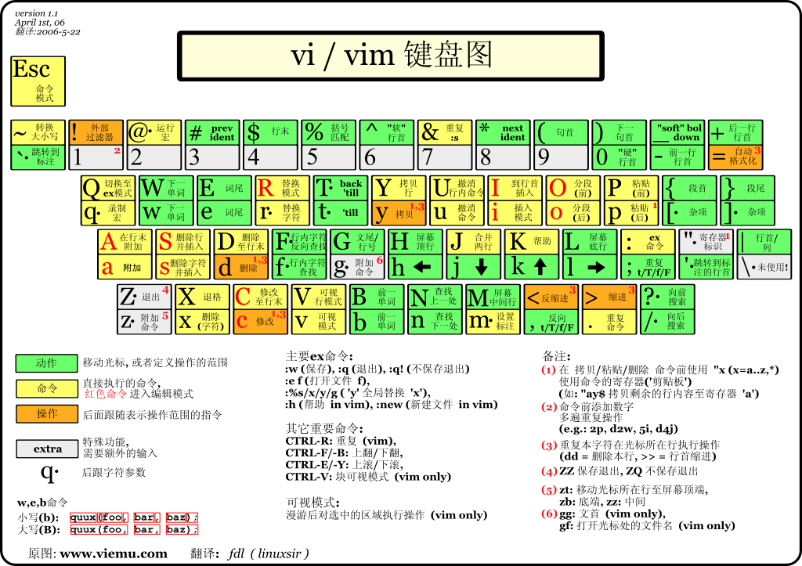

vi filename, and editZZ, save file:w, save:w new-filename, saveAs:w!, force write:e!, resume:q!, force quit:!rm junk-file:!df
动词代表了我们打算对文本进行什么样的操作。例如：
d 表示删除delete r 表示替换replace c 表示修改change y 表示复制yank v 表示选取visual select 名词代表了我们即将处理的文本。Vim 中有一个专门的术语叫做 [文本对象] text object，下面是一些文本对象的示例：
w 表示一个单词words 表示一个句子sentencep 表示一个段落paragrapht 表示一个 HTML 标签tag介词界定了待编辑文本的范围或者位置。
i 表示在...之内 insidea 表示环绕... aroundt 表示到...位置前 tof 表示到...位置上 forward有了这些基本的语言元素，我们就可以着手构造一些简单的命令了。文本编辑命令的基本语法如下：
动词 介词 名词
下面是一些例子（如果熟悉了上面的概念，你将会看到这些例子非常容易理解），请亲自在 Vim 中试验一番。
# 删除一个段落: delete inside paragraph
dip
# 选取一个句子: visual select inside sentence
vis
# 修改一个单词: change inside word
ciw
# 修改一个单词: change around word
caw
# 删除文本直到字符“x”（不包括字符“x”）: delete to x
dtx
# 删除文本直到字符“x”（包括字符“x”）: delete forward x
dfx
数词指定了待编辑文本对象的数量，从这个角度而言，数词也可以看作是一种介词。引入数词之后，文本编辑命令的语法就升级成了下面这样：
动词 介词/数词 名词
下面是几个例子：
# 修改三个单词：change three words
c3w
# 删除两个单词：delete two words
d2w
另外，数词也可以修饰动词，表示将操作执行 n 次。于是，我们又有了下面的语法：
数词 动词 名词
请看示例：
# 两次删除单词（等价于删除两个单词）: twice delete word
2dw
# 三次删除字符（等价于删除三个字符）：three times delete character
3x